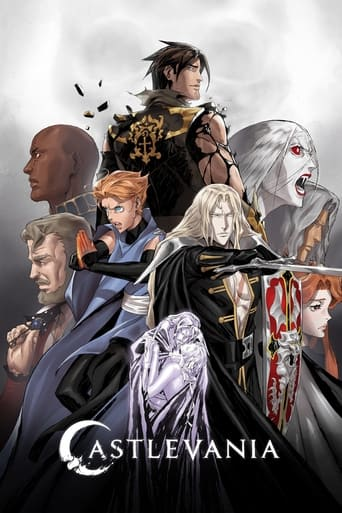
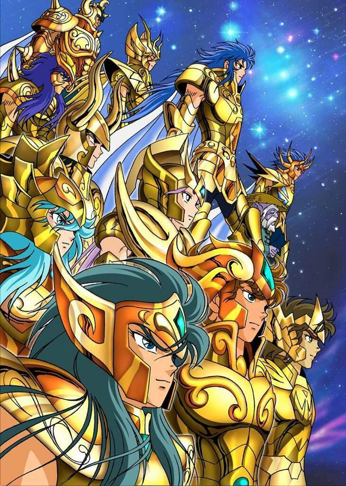

ANIME
|  |
Castlevania é uma série de animação baseada no jogo japonês de 1989, Castlevania III: Dracula's Curse, da Konami. A série retrata Trevor Belmont, que defende o condado da Valáquia de Dracula e seu exército de demônios. |

|
Bleach é uma série de mangá escrita e ilustrada por Tite Kubo. Bleach segue as aventuras de Ichigo Kurosaki que após ganhar os poderes de um Ceifeiro de Almas, através de uma Ceifeira de Almas, Rukia Kuchiki. |
|  |
Saint Seiya ou Os Cavaleiros do Zodíaco é uma série japonesa de mangá e anime escrito e ilustrada por Masami Kurumada. Foi publicada originalmente na revista Weekly Shōnen Jump de dezembro de 1985, sendo sua primeira edição divida em duas partes entre dezembro de 1985 e janeiro de 1986, até dezembro de 1990. |